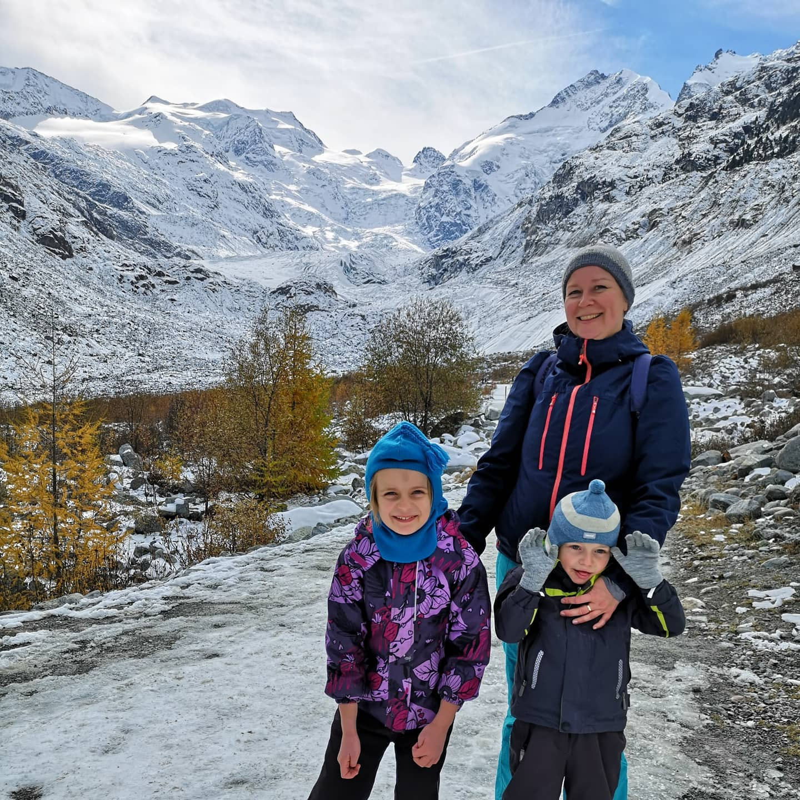
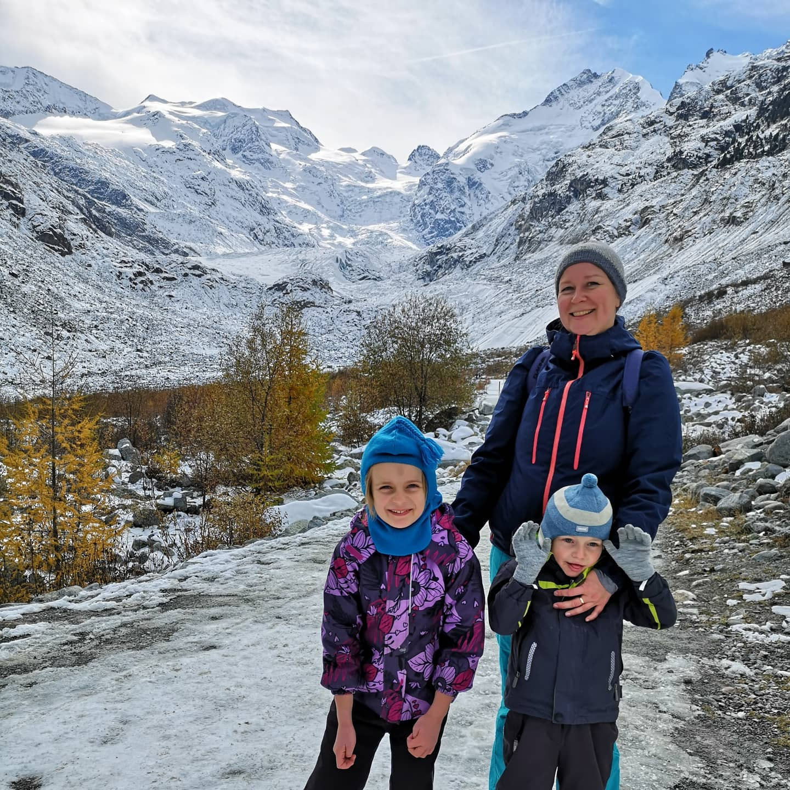
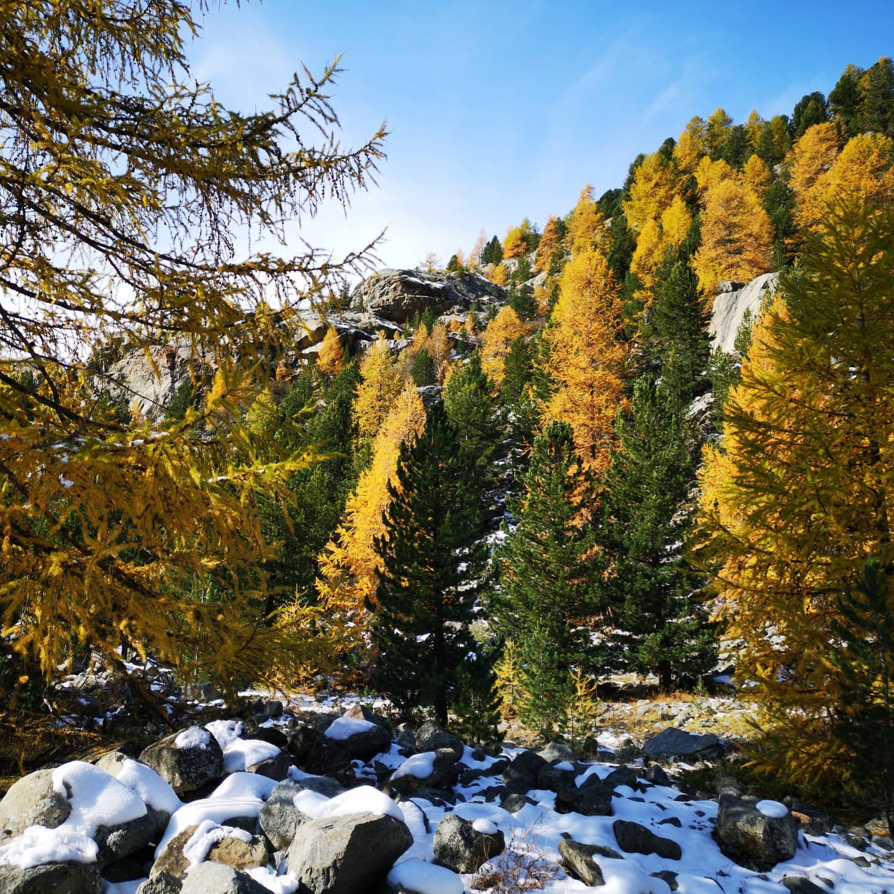
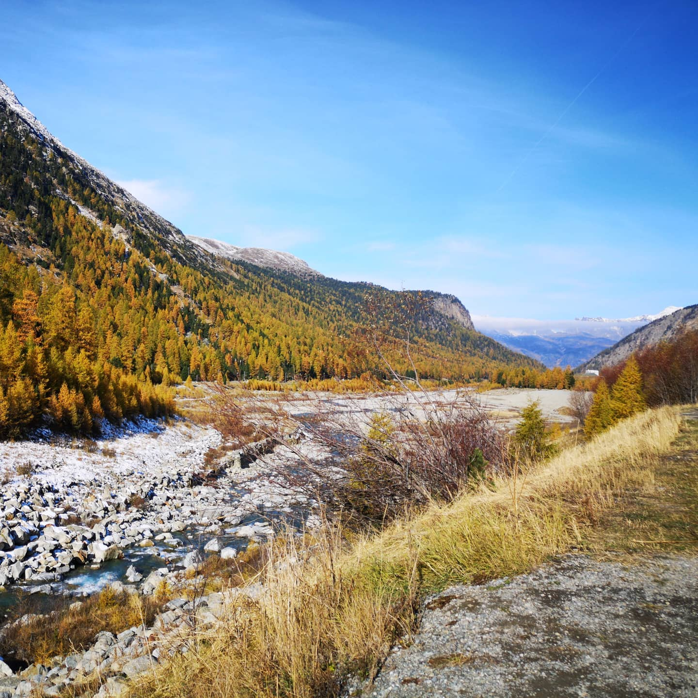
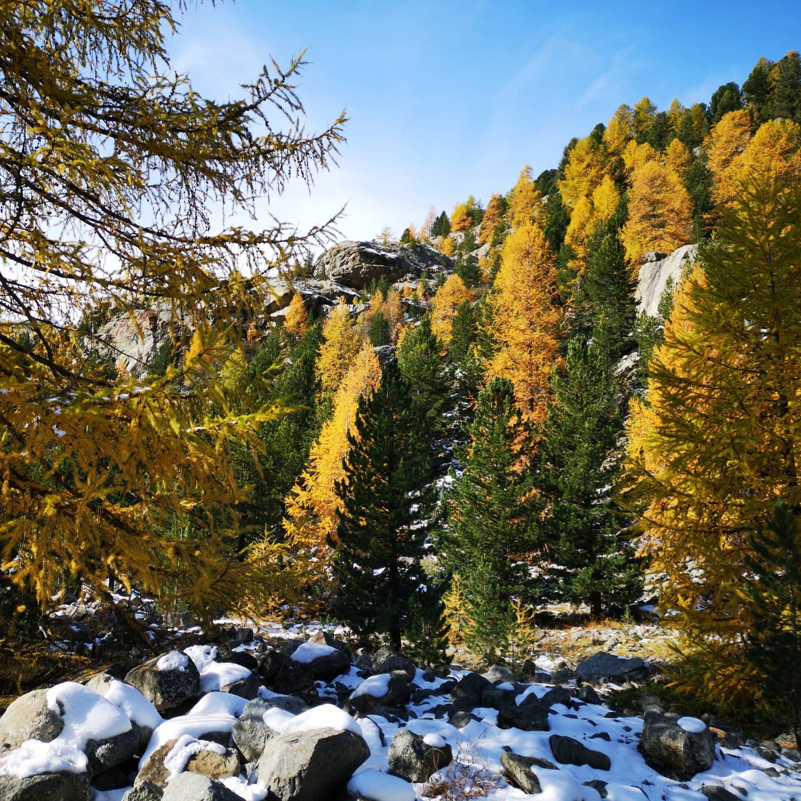
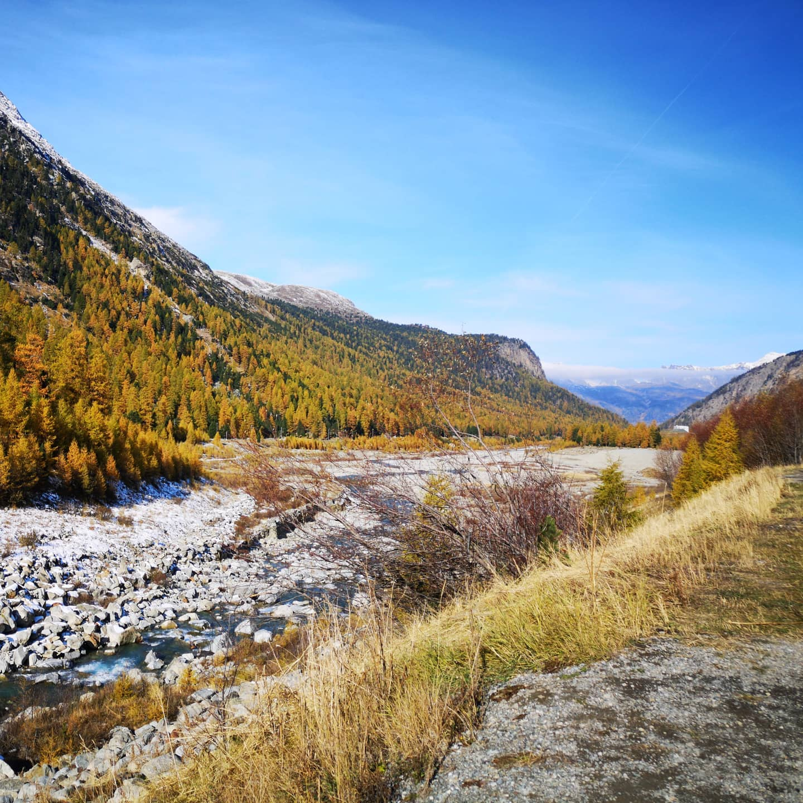

Dying glaciers and pioneer plants. Learned today that the Larch (Lärche) is specialised in taking...
Imported from Instagram.
Dying glaciers and pioneer plants. Learned today that the Larch (Lärche) is specialised in taking over rough territory. The closer to the glacier tongue you get, the smaller they are. Also, unlike firs, they color in autumn, which creates a magnificent scenery.
#autumnforests #glaciers #engadin #climatechange

 

 


